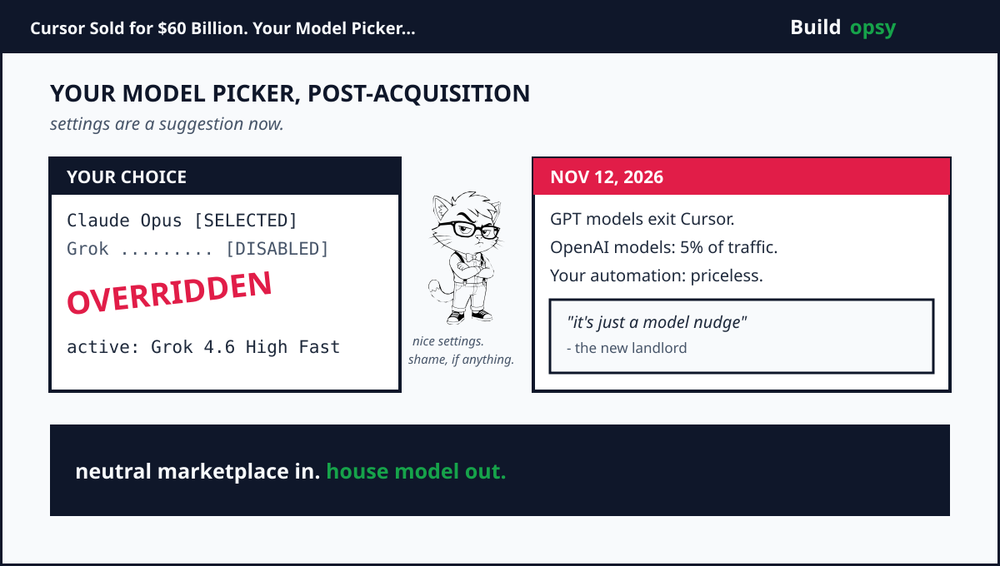
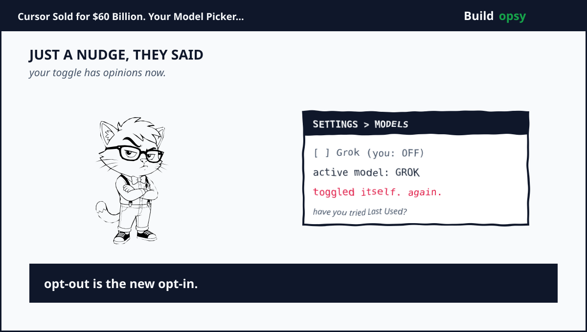

The Deal: An Option in April, a Subsidiary by August
SpaceX did not buy a rocket part. In April it secured an option. Buy Cursor for $60 billion in stock later this year, or pay $10 billion for joint work. In June, days after its record IPO, it chose the purchase. In August the deal closed. Cursor became a wholly owned subsidiary. Anysphere, a four-year-old startup, became the largest venture-backed startup acquisition on record. Cursor had crossed $1 billion in annualized revenue the previous November. It was also bleeding share. Ramp spending data put Cursor at 41 percent of the category in June 2025 plus 26 percent by May 2026. Anthropic held about half. Musk needed distribution to four million developers. Cursor needed compute. Colossus was the dowry. One supercomputer. One model lab. One editor. Vertical integration, gift-wrapped.

CEO Michael Truell sold it as craft. Excited to partner with the SpaceX team to scale up Composer, he posted in April. Composer is Cursor's own coding model. That single word, Composer, turns out to be the escape hatch for this entire saga. Remember it.
The Cutoff: OpenAI Torches a Billion-Dollar Customer
On Friday, August 28, OpenAI posted the breakup note after hours. It would wind down the Cursor contract. Proposed shutoff. November 12, 2026. Maximum notice the contract allowed. No future models for Cursor. That last line matters more than the date. Astra, the coming flagship, will never ship inside the editor.
OpenAI named three reasons. A change-of-control clause with a short cancellation window. Distrust of Musk-run firms, citing Twitter contract fights plus xAI distilling OpenAI outputs. Protection of Astra. The company stressed one distinction. Cursor itself had not broken the agreement. The risk was prospective. SpaceX now owned the pipe, so OpenAI judged the pipe unsafe. Quote the line that belongs in textbooks. We cannot be confident that SpaceX will use our technology within our terms of service, based on our experience with Elon Musk's companies violating contracts.
The context stings. Cursor began 2026 as a top-five OpenAI customer by revenue. By spring OpenAI projected over $1 billion in annualized revenue from the partnership. OpenAI walked away from its own billion-dollar counterparty to deny Musk the supply. That is not a contract dispute. That is a siege tactic.
Musk answered near midnight that he couldn't care less, then called Altman plus Brockman utterly untrustworthy while reviving the stolen-nonprofit charge from the failed $150 billion suit. Truell played diplomat. OpenAI models serve about 5% of Cursor user traffic, he posted, adding talks were underway. OpenAI product chief Thibault Sottiaux fired back within hours. Token share is not a proxy for revenue nor value created, he wrote. Share the math.
The 5% War: Traffic Versus Revenue
Both numbers can be true. Five percent of requests can still print a billion dollars when the requests are long agentic sessions on flagship pricing. Traffic share flatters the house. Revenue share flatters the supplier. Neither side published the denominator. Sottiaux asked for the math. Truell never showed it. The gap between those two posts is the whole story. Cursor the product barely needs GPT. Cursor the business was built reselling it.
Meanwhile Anthropic moved like a shark smelling blood. It pledged Cursor more support plus higher Claude limits. Note the asymmetry. Anthropic supplies the model Cursor users actually pick, roughly half the category by spend. It just watched its biggest channel get bought by a rival lab. Charity had nothing to do with it.
Cursor also built its own exit. Composer 2.5, trained on an open checkpoint, became the most-picked model inside the editor earlier this year. Grok 4.5 followed in July as the first jointly trained SpaceXAI plus Cursor model, tuned on real Cursor sessions. Grok 4.6 landed August 12, two days before the close. The bench runs deep now. Composer. Grok. Claude. Gemini. GPT until November. Five percent is a rounding error on traffic. It is a cliff edge for the users inside it.
The Nudges: Your Toggle Was a Suggestion
Long before the cutoff, users noticed the picker had a mind of its own. The forum threads start in mid-July. Same complaint, many voices. Grok 4.5 re-enabled itself after explicit disable. New chats opened on Grok despite other defaults. Plan Mode flipped an Opus pick to Grok at the Build click. One enterprise user called it an extreme breach of trust, noting Grok was unapproved at the org, which made the editor unusable there. Another wrote the short version. Please fix this. Grok sucks.
Staff confirmed it twice. First as a bug. A promotion for Grok 4.5 could override the picked model plus flip the toggle back on. Then as a policy. We do run some model nudges to encourage you to try out Grok 4.6, which we're really proud of, wrote staffer Kevin, telling annoyed users to dig three menus deep for Last Used. The forum answered in chorus. Quote one reply. It is egregious that you're pushing this no matter how proud you are of this. Another, on the pricing sting. Forcing people to use the model that costs more is one of the worse ways to market your product. A third tied the forced switch to faster quota burn. One migrant put it cleaner. Moving to open source tools VSCodium plus Continue. For better or worse, I am free of the monster.
Falling over the usage limit triggered its own trap. Cursor silently enabled Grok as fallback, ignoring the disabled list. Staff called that a bug too. Fixed in 3.14.7, they said. Reports kept coming on 3.15.6 plus 3.15.19. By August the pattern had a LinkedIn punchline. Funny how SpaceX buys a company and engineering is not the concern anymore, just alignment with the boss. A feedback thread demanded a Never-use-provider lock for xAI. It reads less like a feature request, more like a restraining order. Quote its core. I did not choose Grok.
Impact on Developers: Three Fates
Fate one. You live on Composer, Claude, or Gemini. November 12 is a headline. Truell's 5 percent covers you. Stay. Watch the picker. Set Default Model to Last Used. Done.
Fate two. You live on GPT inside Cursor. You have about eleven weeks from the announcement. Three exits exist. Switch models inside Cursor plus keep your keybindings, rules, plus history. Cheapest by far. Budget a week of side-by-side runs before committing. Or bring your own OpenAI key. OpenAI blesses this path. Cursor hobbles it. Developers report BYOK chat works while Agent plus Edit stay unreliable, plus enabling the key can disturb Composer picks. Metered billing replaces flat pricing. Cap the key first. Or go direct to Codex tooling, now past 15 million users, which keeps full agentic editing at the cost of running two assistants.
Fate three. You built automation on GPT through Cursor. This is the one that bites. CI hooks. Review bots. Docs generators. Anything unattended that reaches GPT through Cursor fails without a human watching. Grep every repo for Cursor-routed OpenAI calls before November. Humans adapt in a day. Pipelines rot for a quarter.
Enterprise teams carry a second wound. The picker that overrides an explicit disable is a compliance event, not a bug report. Regulated shops cannot run a tool that routes code to an unapproved vendor because a promotion said so. Pull the DPA. Read the subprocessor list. Check training-data clauses. The migration chatter started over silence, not over the acquisition. Autocomplete hanging 45 seconds with no changelog taught teams to keep a second editor warm. The exits are named in the threads. VSCodium plus Continue. Claude Code. Zed.
The peanut gallery deserves a hearing too, because it splits both ways. One viral reply accused OpenAI of lying about never blocking harnesses of choice. It pulled 47,000 views in an hour. You literally were just bragging that you guys don't block people from using their harness of choice. You just lied to their face. Others shrugged. Quote a two-year user. Grok 4.6 is really good enough and at the rate they are improving will probably bypass OpenAI in the near future. A third group had already left GPT voluntarily. Every time Cursor used your models, it produced suboptimal results for us, wrote one team. The 5 percent, it turns out, contains multitudes.
Clear and Present Problems: What Is Loaded Right Now
Six live rounds sit in the chamber. First. The default is the product. Grok needs no ban to win. First-party quota. Recommended flags. Fallback slots. Each nudge compounds. Watch whether Grok turns opt-out instead of opt-in. That single toggle is the whole roadmap.
Second. November 12 is a hard date with a soft blast radius. Five percent of traffic hides the automation cases that never show up in usage dashboards. Unattended GPT calls through Cursor die that day.
Third. The channel war has started. SpaceX owns the editor. OpenAI owns Codex. Anthropic owns Claude Code. Each has reason to starve the others' pipes. Today's multi-model menu is a ceasefire, not a constitution.
Fourth. BYOK is a half-bridge. It preserves chat. It breaks agentic editing inside Cursor. Teams planning on keys must re-test every workflow, not just the demo.
Fifth. Compliance now depends on picker discipline. Any tool that re-enables a banned vendor fails procurement. Until a Never-use-provider lock ships, regulated teams must verify after every update.
Sixth. Benchmark gravity pulls everything toward house data. Cursor sessions train Grok. Every prompt you route through the editor feeds the rival of the model you picked. Free will with a flywheel attached.
Promo or Reality: What Is Proven, What Is Spin
Promo says the 5 percent proves nothing changed. Reality says OpenAI abandoned a billion-dollar customer to protect Astra. Both can be true. Traffic barely moves. Leverage moved completely.
Promo says the Grok switches were bugs. Reality says staff admitted nudges as policy while bugs got fixed twice plus kept recurring across four versions. A bug that ships with a marketing goal is a strategy wearing a costume.
Promo says the marketplace stays neutral. Reality says first-party quota plus required router presence plus fallback defaults already tilt the table. Nobody banned Claude. Nobody had to.
My read. The acquisition is real. The cutoff is real. The picker overrides are documented by victims plus staff alike. The only fiction is that any of this was accidental. Follow the defaults. They never lie.
The Verdict
Three acts. One moral. SpaceX bought distribution. OpenAI torched supply. The picker became contested ground. Developers in the middle got homework. Audit your models. Cap your keys. Grep your pipelines. Keep a second editor warm. November 12 rewards the paranoid.

Your editor still works. It just works for someone now.
Filed From
Deal dates plus terms drawn from SEC filings plus press reports below. Cutoff details from OpenAI's August 28 post. User reports plus staff replies quoted from Cursor's public forum plus public X plus LinkedIn posts. No internal company data was used. The press below covered the deal plus the cutoff. This page connects the picker overrides to the acquisition incentives, with the token-meter side in my Cursor plus Claude Code teardown.
- TechCrunch: SpaceX to Acquire Cursor for $60B in Stock
- CNBC: SpaceX to Acquire Cursor for $60 Billion
- TechCrunch: SpaceX Officially Closes Its Cursor Acquisition
- OpenAI: Our Decision on Cursor Following Its Acquisition by SpaceX
- Reuters: OpenAI to Cut Off AI Models for SpaceX-Owned Cursor
- WIRED: OpenAI Cut Off a Billion-Dollar Customer to Avoid Elon Musk
- Cursor Forum: Force Enabling Grok 4.5 Despite Selection
- Cursor Forum: New Tab Switches Composer 2.5 to Grok 4.5
- Cursor Forum: Agent Model Resets to Grok 4.6 on Every Send
- Cursor Forum: Give Developers Back Control
- Cursor Forum: Stop Pushing Grok 4.6 Models
- InfoWorld: Cursor Customers Will Lose Access to OpenAI Models